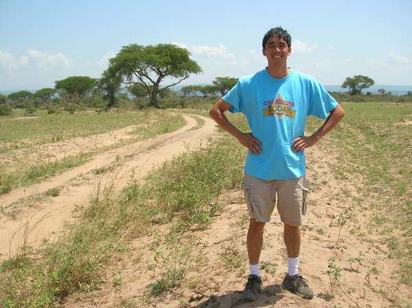
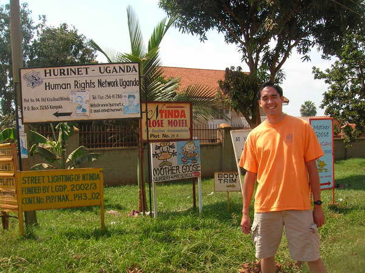

About
Name: Jonathan Lai
Origination: San Francisco Bay
Interests: Science (Plant Biology), Technology, Design, Education, Food
Pastimes: Painting (Arts, both with physical and digital media)
Several pictures of a journey Uganda in 2006 for a missions trip and service projects, helping out at two orphanages and assistance in setting up a maternity hospital with a the Sacramento/Davis based service organization.

Ntinda, Kampala Uganda

Northern Section of Uganda